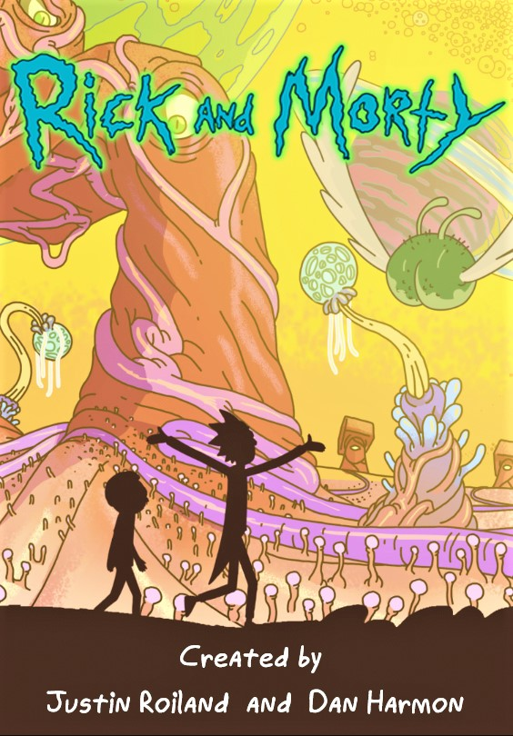
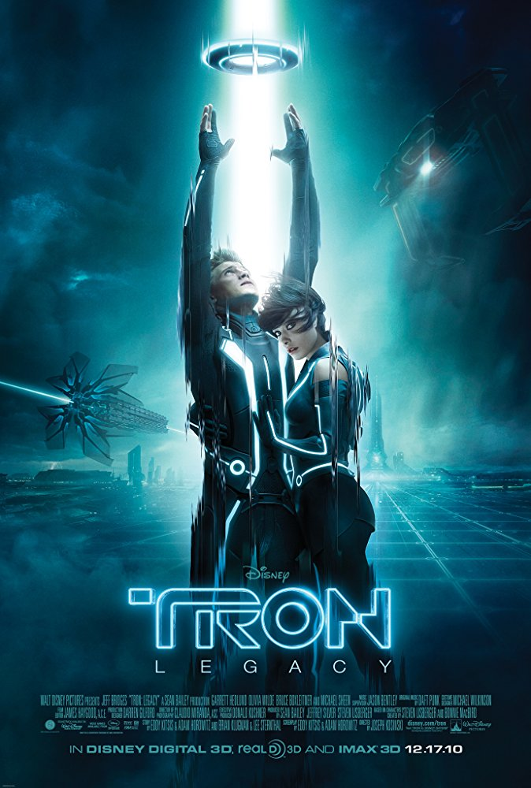
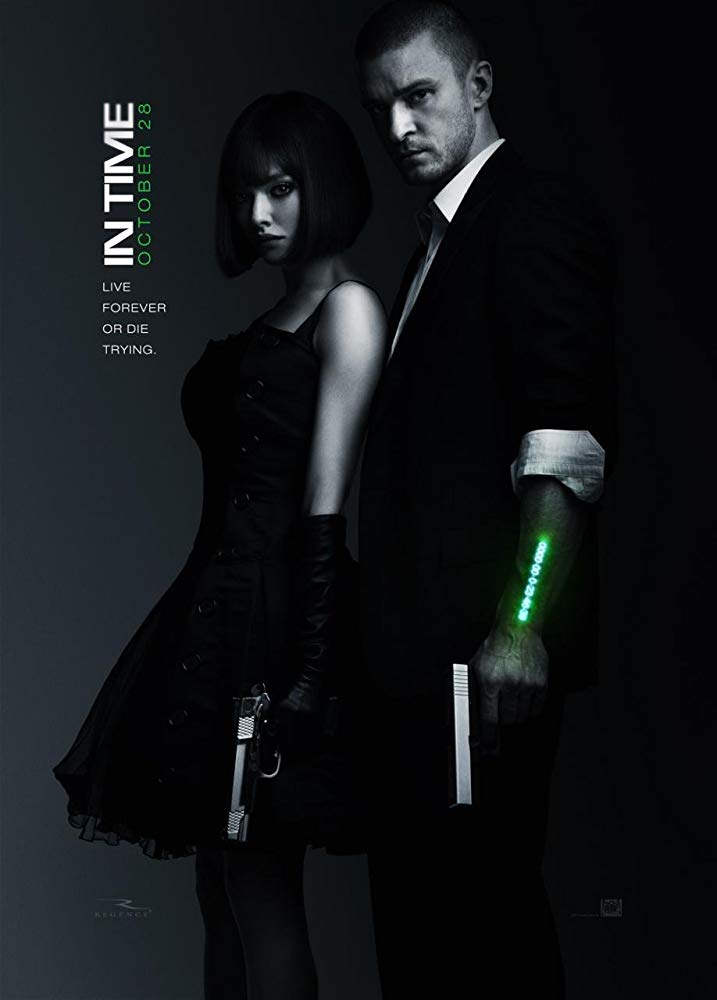

Avengers: Infinity War (2018)
The Avengers and their allies must be willing to sacrifice all in an attempt to defeat the powerful Thanos before his blitz of devastation and ruin puts an end to the universe.

Rick and Morty
An animated series that follows the exploits of a super scientist and his not-so-bright grandson.

Tron
The son of a virtual world designer goes looking for his father and ends up inside the digital world that his father designed. He meets his father's corrupted creation and a unique ally who was born inside the digital world.

In Time
In a future where people stop aging at 25, but are engineered to live only one more year, having the means to buy your way out of the situation is a shot at immortal youth. Here, Will Salas finds himself accused of murder and on the run with a hostage - a connection that becomes an important part of the way against the system.